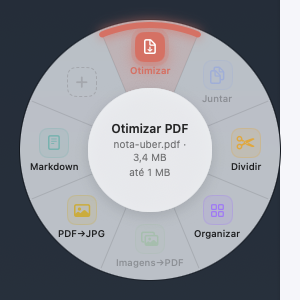
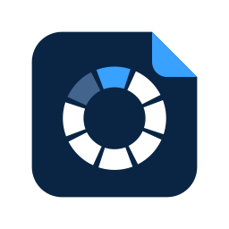

Otimizar PDF
Comprime até ficar abaixo do limite que você definir, com a melhor qualidade que cabe nele.
Um menu circular com sete ferramentas de PDF e imagem aparece em cima do arquivo. Você escolhe a ação e o resultado fica ao lado do original. Tudo roda no seu Mac.

As que não servem para o arquivo selecionado ficam apagadas no círculo. Ao passar o mouse, o centro mostra o que vai acontecer antes do clique.
Comprime até ficar abaixo do limite que você definir, com a melhor qualidade que cabe nele.
Vários PDFs e imagens viram um arquivo só, na ordem do nome.
Separa cada página num PDF ou extrai um intervalo como 1-3, 5.
Arraste para reordenar, apague, gire e acrescente páginas de outro arquivo.
HEIC, JPG, PNG ou WebP viram um PDF, uma página por imagem, já do tamanho certo.
Cada página vira uma imagem, numa pasta ao lado do PDF.
Títulos, listas e links viram um arquivo .md. Página escaneada passa por OCR no próprio Mac.
Em cima do arquivo ou da seleção, no Finder ou na Mesa. Sem a tecla, o clique direito continua o de sempre.
Mova o mouse na direção da ação e clique. Esc ou um clique fora fecha sem fazer nada.
O resultado aparece selecionado, pronto para arrastar no formulário. O original nunca é alterado.
As mesmas ações também ficam no clique direito normal do Finder, em Serviços.
Nota fiscal, comprovante e recibo de reembolso não precisam passar por site de conversão. A compressão, a conversão e o OCR usam as bibliotecas do próprio macOS, sem conexão com a internet.
O limite vem configurado em 1 MB e muda nas configurações. Se nem na menor qualidade legível o arquivo couber, o app avisa em vez de entregar algo ilegível.
